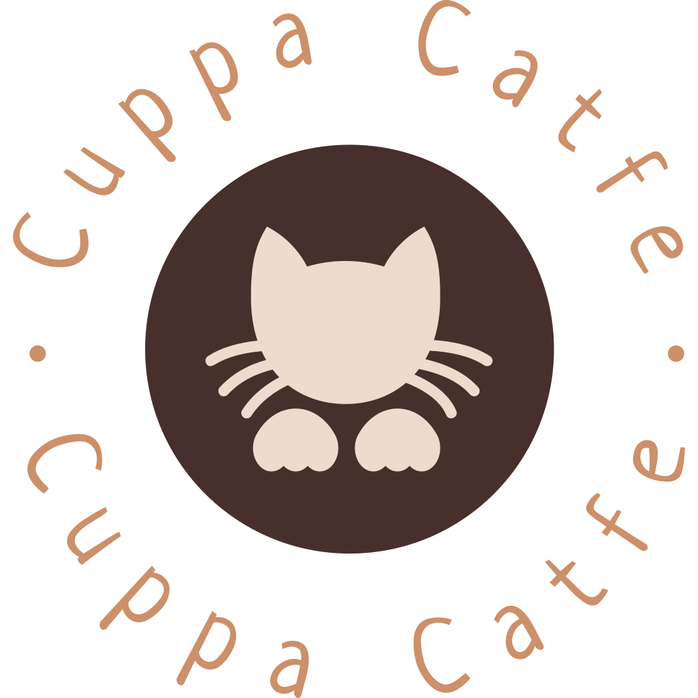

Our Rules
If it's your first time visiting a cat cafe, don't worry! It's a simple feat, but there are important things to keep in mind to keep our cats happy, healthy, and safe.
If we haven't covered something, we always appreciate feedback. Please just try to keep in mind of how the staff and cats may feel!
Rules are subject to change any time, and we ask you check back before each visit!
Food & Beverage Rules
- Please do not bring outside treats.
- Please do not bring food or beverages inside the cat playroom.
- Please do not try to feed cats human food or outside treats not on the menu.
Playroom Rules
- Abuse or roughhousing will not be tolerated, and you may be asked to leave the playroom. We ask you to keep your voice low and make gentle, slow movements.
- We have plenty of cats here! Please leave your furry friends at home.
- Please be patient with our cats! Your best chance to get one to approach you is to sit quietly, and maybe have a treat ready for them!
- Please ask staff before picking up a cat, not all cats enjoy being picked up!
- We have plenty of toys our cats love! There is no need to bring your own.
- Be prepared for scratches, if you are harmed in any way, please let staff know and we will help you!
- Please be kind and respectful towards our staff and volunteers, we will not tolerate physical or verbal abuse.
Young Guests
- Although we know it's important for the entire family to get to know a cat before adopting, we do not allow guests under five years of age. Minors aged 12 and younger must be accopmanied and supervised by an adult.
- If a young guest is bothering the cats physically or through sound, your party may be asked to leave. Please respect the staff's decision, you will be given a partial refund.
 Location & Hours
Location & Hours